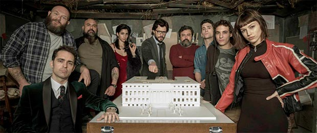

La Casa de Papel vira sensação com trama intensa e personagens carismáticos

La Casa de Papel vira sensação com trama intensa e personagens carismáticos
Após ser lançada sem muito barulho na Netflix, a série espanhola La Casa de Papel foi ganhando destaque até se tornar um verdadeiro fenômeno no streaming neste início de 2018. Produção original do canal Antena 3, a série contou com 15 episódios e foi exibida na Espanha entre maio e novembro do ano passado, com um intervalo de quatro meses no meio. A Netflix, que adquiriu os direitos de distribuição global da produção, acabou optando por remontar os episódios. Com isso, os nove primeiros episódios da versão espanhola se transformaram em 13 capítulos, já disponibilizados no Brasil. Os demais chegarão às telinhas no dia 6 de abril.
Mas o que fez dessa série um fenômeno no Brasil? Então, são vários os fatores, mas o principal deles é um só: é realmente uma ótima produção. La Casa de Papel é divertida, envolvente e deliciosamente brega. A série abraça completamente o absurdo e o drama barato, muitas vezes lembrando uma telenovela, mas o faz com boas atuações e com um roteiro repleto de reviravoltas.
A trama gira em torno de um grupo de assaltantes que decide invadir a Casa da Moeda da Espanha e imprimir seu próprio dinheiro antes de deixar o local. Eles tomam dezenas de reféns e antecipam boa parte dos planos dos órgãos de polícia local. Mesmo com tudo muito bem pensado, os criminosos não conseguem prever tudo o que acontece lá dentro. Ao mesmo tempo, do lado de fora, o líder do grupo, chamado de Professor (Álvaro Morte), começa a desenvolver uma inusitada relação com a detetive responsável pela negociação de liberação dos reféns, Raquel (Itziar Ituño).
Ao criar personagens inteligentes e planos mirabolantes, a série consegue prender a atenção do espectador o tempo todo. Além disso, investe em cliffhangers que tornam a maratona em experiência quase que inevitável. Todo episódio termina com uma deixa forte para o seguinte.
Criada por Álex Pina, a série investe no melodrama latino, mas também se utiliza bastante de padrões do cinema americano, especialmente os filmes de roubo e formação de equipe. O desenvolvimento dos criminosos é bem interessante. Todos com nomes de cidade (Rio, Berlim, Moscou, Nairóbi, Tóquio, Denver, Helsinque e Oslo), os bandidos são bem apresentados. A cada episódio nos identificamos cada vez mais com eles e recebemos mais informações sobre suas origens e sobre importância para o plano.
Ao mesmo tempo, também nos aprofundamos com relação aos policiais e alguns dos reféns, gerando um clima de empatia que atinge todos os lados do conflito. É interessante, como espectador, nos vermos na situação de torcer ao mesmo tempo para polícia e bandido. Na verdade, o que há é uma torcida pelo conflito.
Em termos narrativos, La Casa de Papel abandona por completo qualquer tipo de verossimilhança, criando uma sequência de situações absurdas que funcionam bem como entretenimento. É verdade também que, em alguns momentos, a série abusa um pouco da boa vontade do espectador, especialmente no que diz respeito à relação de Raquel e Professor.
Ao longo de 13 episódios, a série consegue aprofundar cada um dos assaltantes, mesmo aqueles que inicialmente pareciam presentes só pra fazer figuração. Ainda desenvolve relacionamentos amorosos e de amizade, não só entre os próprios criminosos, mas também entre reféns e bandidos. Úrsula Corberó (Tóquio), Miguel Herrán (Rio), Alba Flores (Nairóbi), Pedro Alonso (Berlim), Paco Tous (Moscou), Jaime Lorente (Denver), Darko Peric (Helsinque) e Roberto García Ruiz (Oslo) estão bem em cena, com destaque para os dois primeiros.
A primeira metade da temporada termina de forma impactante, prometendo uma reviravolta maior do que todas as anteriores. Agora é esperar até abrir para conferir o resto!